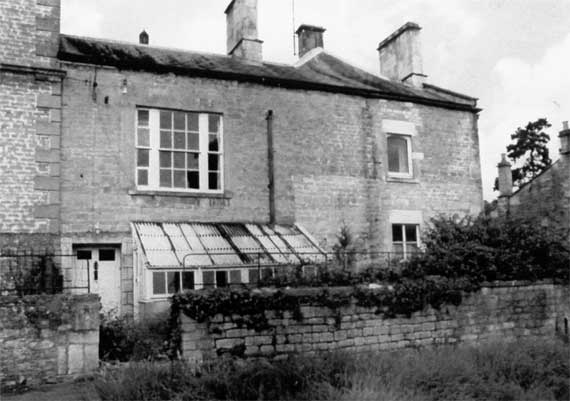

Type of building:
Two attached cottages (formerly the wing of a small country house)
Listing:
Grade ll
Plan and elevation:
Double pile. Two storeys.
Summary of the probable main building
history:
Late 17th or early 18th Century in part. Otherwise mainly early 19th Century
with some later (minor) alterations.

East elevation
Exterior:
The front or south-east elevation is built of coursed squared rubble stone.
There is one ground floor window to the right with a dressed stone surround
and fitted with a wooden casement (the lintel is a replacement as, indeed, the
surround may also be a somewhat earlier replacement). There are double glazed
doors, screened by stone/timber/glass lean-to conservatory, and to the left
the principal entry with an applied rusticated stone surround and fitted with
a six-panelled door. There is evidence of an earlier door opening to the right.
A large triple sash window with fluted wood sash boxes lights the first floor
together with another (modernised) window to right, both with dressed stone
surrounds - latter with a replacement lintel, although both window openings
are possibly later insertions from the evidence of bonded joints/repairs. There
are massive and crudely dressed stone quoins to the right. The roof structure
is complex - a shallow pitched slated roof, which, however, is hipped at the
right end of the structure and at a right angle to the main roof line. Similarly,
from the north-west or rear elevation the roof is hipped to the right but follows
the main roof line. This roof structure indicates that the present roof may
be covering previously separate buildings. Roof copings are raised and there
are central and gable end ashlar chimney stacks. The rear elevation has a door
opening with an applied rusticated stone surround, which appears to replace
an earlier wider opening. The ground floor has one two-light wood casement window
with stone ovolo moulded mullion and surrounds and another window, which is
single light with ovolo moulded surrounds housing a pivoted cast iron frame.
This window opening appears to be a replacement for an earlier opening and sill
vestiges indicates that this earlier opening housed a sash window. Both present
windows are under return drip labels, although labels and mullions look little
weathered. The first floor rear has three windows - one two-light with a beaded
mullion and beaded surrounds (weathered), one wood casement window and one small
sash - this last appears to replace a former substantially larger window opening.
There is an inserted door opening on the gable end elevation. The same elevation
has quoins to the right with neighbouring cottages on a farther back building
line.
Interior:
Room G1 is separated from the entrance passage by a stud partition with the
entry from G4 a step down. G1 has a wood floor and a tiled fireplace. G4 has
a rubble stone floor, a gas light bracket and meat safe/storage usage is apparent.
Access to G2 from G1 is by a door opening inserted at an angle to the left of
the G1 fireplace (steps up). Another door opening (sealed) is to the right of
the G1 fireplace. G2 has a gable end entry with a segmental arch over (chamfered
and stopped surrounds), two gas lighting brackets, parquet flooring and a tiled
fireplace. Access to G3 from G2 is up steps. G3 is the kitchen/scullery with
a stone flagged floor, beaded wood beam over; wood panelling and double doors.
The room is not square. Wood steps lead down to the rear passage giving access
to G4, the rear entry, the side passage and the front entry. The side passage
is stone flagged, slopes sharply down for part of its length towards the front
entry with a blocked door opening (triangular arch over) formerly giving access
to the main house.
Date and development:
Reputedly the servants’ quarters attached to the country residence of
John Wood the Elder. Nevertheless, the property has a complex developmental
history. It is suggested that G4 with its rubble stone floor, apparent wider
rear entry than the present entry giving access to the yard and with its side
access into the former main house is the oldest part of the property - possibly
stabling and maybe late 17th Century or early 18th Century in date. G3 was then
probably added (servants accommodation?) which brought the building up against
other structures including G2, which is built along a different building line.
The previous function of G2 is unknown but its massive chimney breast and quoins
suggest an "industrial" usage, possibly brewing / malting. G1 was
probably added contemporaneously or, somewhat later, in the early 19th Century,
as clear residential accommodation (with the large triple window throwing light
into a spacious high ceiling first floor room). Other later 19th Century work
probably included the insertion of the mullioned windows. The rusticated door
surrounds and gable entry door opening and front window work may have formed
part of the modernisation and alterations that appeared to have taken place
in the early to mid 20th Century, Mainly in probably the 1930's.
References and bibliography:
- Mrs Mary Frayling - Sale Particulars c1890
- Bath Guildhall Archives - Biggs Collection - Mowbray Green architects
drawings 1907
Reference Pictures
| Doorcase | East elevation (detail) | Culvert in wall at rear |
Survey Drawings
| Ground Plan | Section | Conjectural Developement |
Images from the Archives
| 1908 Ground floor plan of the wing that now constitutes BE 046 & 047. | East elevation c1882 |